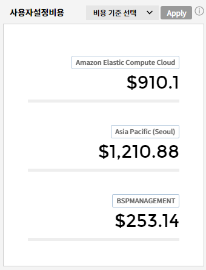
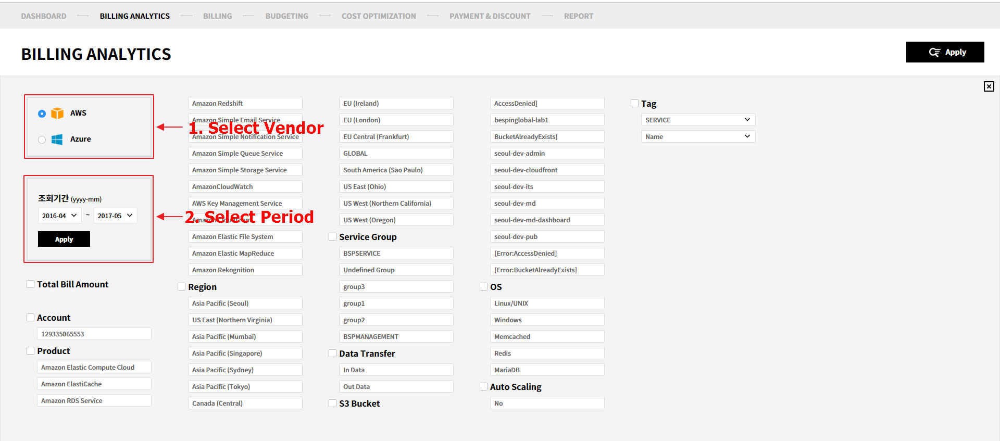
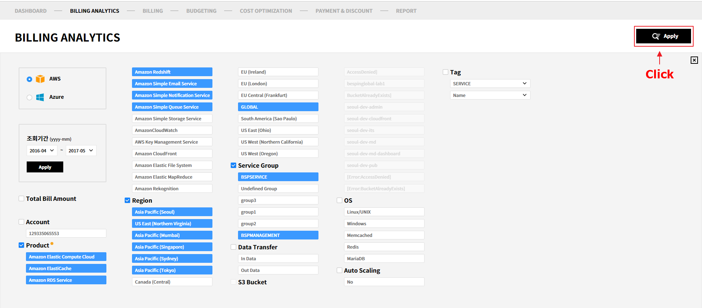
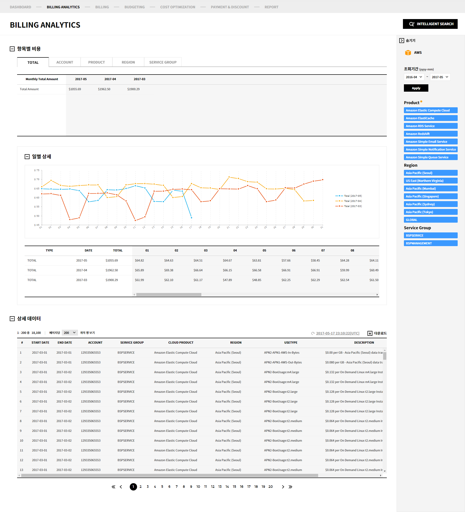

Metering
현재 운영 중인 Multi Cloud Service 에서 발생한 비용을 확인할 수 있습니다.
Metering 서비스는 7개의 메뉴를 제공합니다.
Dashbaord
Cloud Service 별로 현재 발생 비용과 월별/일별 비용 발생 현황을 한눈에 확인할 수 있습니다.
Metering > Dashboard1. Cloud Vendor
현재 사용 중인 Cloud Vendor들과 각 Vendor의 Account 정보가 표시됩니다.
Cloud Vendor와 Account 를 선택 시, Dashboard에 해당 Vendor, Account 의 사용 비용이 표시됩니다.
2. 이번달 요약
이번달에 발생한 비용에 대한 요약 정보를 확인할 수 있습니다.
-
Hot bill :
당일 발생하여 아직 집계가 완료되지 않은 비용을 표시합니다. -
집계 완료 :
1일부터 현재까지 집계가 완료된 전체 비용을 표시합니다. -
예상 비용 :
사용 패턴 분석을 통해 이번달에 발생할 예상 비용을 표시합니다.
3. 월별 누적 사용 금액 비교
조회 기간 설정에 따라 최대 12개월 까지의 발생 비용을 비교, 분석 할 수 있습니다.
비교할 기간을 2달/4달/6달/12개월 중 선택할 수 있으며, 비교할 기간을 직접 입력할 수도 있습니다.
그래프는 아래와 같이 구성되어 있습니다.
-
Blue :
각 월 1일부터 현재일까지의 발생 비용을 표시합니다. -
Yellow :
Hot bill 금액(당일 발생하여, 아직 집계가 완료되지 않은 비용)을 표시합니다. -
Grey :
이전월에 발생한 전체 비용을 표시합니다. -
Dash-line :
이번달 예상 비용을 표시합니다.
4. 사용자 설정 비용
빠르게 확인하고자 하는 항목을 선택해, 해당 항목에서 발생한 비용을 확인할 수 있습니다.
[비용기준 선택] 버튼을 클릭하면 설정 가능한 항목들이 메뉴로 표시됩니다.
|

|
 |
아래 카테고리들에 대해 세부 항목을 선택해 발생 비용을 확인할 수 있습니다.
- Account
- Product
- Region
- Data Transfer
- Service Group
5. 일별 비용 트렌드
월빌 비용 트렌드에서 선택한 기간의 일별 비용 트렌드 차트와 상세 데이터를 제공합니다.
이를 통해 일별 사용 패턴을 확인할 수 있으며, 언제 이상 비용이 발생했는지를 확인할 수 있습니다.
6. 항목별 비용
Account/Product/Region/Service Group 별로 발생 비용을 확인할 수 있으며 이에 대한 일별 트렌드 차트를 확인할 수 있습니다.
7. 월별 비용 트렌드
최대 3년간의 월별 비용 발생 트렌드를 확인할 수 있습니다.
월별 비용 트렌드를 거시적으로 확인할 수 있습니다.
Billing Analytics
Billing Analytics는 실제 사용하고 있는 Resource을 검색 조건으로 좀 더 쉽고 빠르게 발생 비용을 검색할 수 있는 Intelligent Search 기능을 제공합니다.
Metering > Billing Analytics1. 비용 검색
검색 조건을 선택해 선택한 항목에서 발생한 비용만을 확인할 수 있습니다.
-
검색할 벤더와 기간을 선택합니다.
검색할 벤더와 기간을 선택하면 해당 기간내 사용한 Account/Product/Region/Service Group 등이 검색 조건으로 표시됩니다. -
검색 조건을 선택합니다.
조건을 선택하면, 선택한 조건과 관계있는 항목만이 선택 가능한 상태로 표시됩니다. -
[Apply] 버튼을 클릭합니다.

-
검색 결과를 확인할 수 있습니다.

2. 검색 결과 보기
서비스 그룹을 생성하고 편집할 수 있는 서비스 그룹 관리 화면으로 이동할 수 있습니다.
서비스 그룹의 관리는 서비스 그룹 관리 문서를 참고해 주세요.
1.1 항목별 비용
선택한 기간, 조건으로 발생한 전체 비용을 확인할 수 있습니다.
또한 이 비용을 Account/Product/Region/Service Group별로 구분해 확인할 수 있으며, 구분 별로 일별 상세 발생 비용과 트렌드 차트를 확인할 수 있습니다.
Total/Account/Product/Region/Service Group 탭 클릭 시, 각 항목 별로 구분된 비용을 확인할 수 있습니다.
1.2 상세 데이터
선택한 기간, 조건으로 발생한 모든 비용의 상세 내역을 확인할 수 있습니다.
Billing
당월 벤더 별 청구 금액을 확인할 수 있습니다.
그리고 월별 청구 금액을 비교해서 확인할 수 있는 기능을 제공합니다.
1. 빌링 청구서
벤더/월 별 청구서를 확인할 수 있으며, 지난달 청구서와 비교할 수 있는 기능을 제공합니다.
-
벤더 선택 :
청구서를 확인할 벤더를 선택할 수 있습니다. 벤더를 선택하면 해당 벤더의 청구서가 표시됩니다. -
월 선택 :
청구서를 확인할 월을 선택할 수 있습니다. 월을 선택하면 해당 월의 청구서가 표시됩니다. -
이번달 요약 :
선택한 월의 청구 내역을 요약해 표시합니다. -
지난달 요약:
선택한 전월의 청구 내역을 요약해 표시합니다.
[오른쪽 화살표] 버튼을 클릭해 올해 월별 발생 비용을 비교해 볼 수 있는 트렌드 차트를 확인할 수 있습니다.
-
월별 트렌드 차트 :
월별 발생 비용을 트렌드 차트로 확인할 수 있습니다. -
월별 데이터 :
월별 발생 비용을 그리드로 확인할 수 있습니다.
2. 클라우드 어카운트 별 요금 정보
등록된 Account 별 요금 정보를 확인할 수 있습니다.
등록된 모든 계정에 대해 각 계정 별, 혹은 통합 요금과 내역을 확인할 수 있습니다.
-
계정 선택 :
비용을 확인할 계정을 선택할 수 있습니다. 선택한 계정의 요약/상세 정보가 표시됩니다. -
요약 정보 :
발생 요금 및 부가 서비스, 할인 요금 등 요금 발생 내역의 요약 정보가 표시됩니다. -
상세 정보 :
발생한 요금에 대한 상세 내역을 확인할 수 있습니다. -
표시 방식 변경 :
상세 정보에 표시되는 요금 상세 내역을 벤더 별 아래 조건으로 정렬해 확인할 수 있습니다.
AWS : Invoice Account Service Group Region Tag
Azure : Subscription Service Group Region Meta Category
3. 전체 요금 정보
Account/Invoice 별 요금 정보를 확인할 수 있으며 부가서비스 내역을 확인할 수 있습니다.
-
어카운트 별 요금 정보 :
등록된 Account 별 비용을 확인할 수 있습니다. -
인보이스 별 요금 정보 :
인보이스 별 요금 정보를 확인할 수 있습니다. -
부가서비스 내역 :
부가서비스 내역과 부가서비스로 인해 발생한 비용을 확인할 수 있습니다.
Budgeting
벤더 별로 월별 예산을 입력하고 예산 대비 실제 사용 비용을 확인할 수 있습니다.
알림 설정을 통해 설정한 예산 대비 비율 혹은 기준 금액 초과시에 SMS, E-mail로 알람을 받을 수 있습니다.
1. Budget Overview
Metering > Budgeting > Budget Overview월별 예산 대비 실제 발생 비용을 그래프로 확인할 수 있습니다.
-
연도 선택 :
선택한 연도의 예산 사용 현황을 표시합니다. -
Total Budget :
벤더 별 예산의 총 합과 모든 벤더에서의 실제 발생 비용을 그래프로 비교할 수 있습니다. -
Cloud 벤더 구분 :
벤더 별 예산과 실제 발생 비용을 그래프로 비교할 수 있습니다.
예산 사용 현황을 확인할 벤더를 선택할 수 있습니다.
2. Budget Setting
Metering > Budgeting > Budget Setting벤더 별 월별 예산을 입력할 수 있습니다.
-
연도 선택 :
예산을 설정할 연도를 선택할 수 있습니다.
최대 3년간의 예산을 설정할 수 있습니다. -
예산 Table :
각 벤더 별로 월 예산을 입력할 수 있습니다.
Cell을 더블클릭하면 입력 가능한 상태로 변경되며, 여기에 예산을 입력할 수 있습니다.
예산 입력 후 상단의 [저장] 버튼을 클릭해 변경 내용을 저장할 수 있습니다.
3. Alarm List
Metering > Budgeting > Alarm List예산 사용에 대한 알람을 설정할 수 있습니다.
-
신규 알람 추가 :
새로운 예산 알람을 설정할 수 있습니다.
버튼을 클릭해 새로운 알람의 정보를 입력할 수 있습니다. -
알람 이름 :
설정한 알람 이름을 표시합니다. -
경고 :
알람 On/Off 상태를 표시합니다. -
알람 수신 방법 :
알람을 받을 방법을 선택할 수 있습니다. -
[삭제] 버튼 :
버튼을 클릭해 설정된 알람을 삭제할 수 있습니다. -
[편집] 버튼 :
기존에 설정된 알람을 편집할 수 있습니다.
4. Alarm Receiver
Metering > Budgeting > Alarm Receiver알람을 받을 수신인을 설정할 수 있습니다.
-
[신규 수신인 추가] 버튼 :
새로운 알람 수신인을 추가할 수 있습니다.
버튼을 클릭해 새로운 수신인의 정보를 입력할 수 있습니다. -
수신자 이름 :
알람 수신인의 이름을 표시합니다. -
Email :
알람 수신인의 Email 주소를 표시합니다. -
휴대전화 :
알람 수신인의 휴대전화 번호를 표시합니다. -
알람명 :
수신자가 수신할 알람을 선택할 수 있습니다.
Alarm List 에서 생성한 알람들의 목록이 표시되며, 여기에서 수신할 알람을 선택할 수 있습니다.
Cost Optimization
Usage, Performace, Cost 분석을 통해 RI 구매, 혹은 Right Sizing 이 필요한 Instance 들을 추천하는 기능을 제공합니다.
Intelligent Search 기능을 통해 검색한 인스턴스들 중, RI 구매가 필요한 항목과 Right Sizing이 필요한 항목을 구분해 확인할 수 있습니다.
그리고 구매한 AWS RI의 사용 현황을 분석할 수 있는 자료를 제공합니다.
1. Right-sizing
Metering > Cost Optimization > Right-sizing검색 조건의 인스턴스들 중 RI 구매가 필요한 항목과 Right-sizing 이 필요한 항목을 각각 Frequency와 Utilization 필터를 통해 확인할 수 있습니다.
-
Frequency :
Frequency 조건을 통해 지속적으로 사용되는 인스턴스들을 확인할 수 있습니다.
조건은 변경할 수 있으며, 숫자를 클릭하면 RI 시뮬레이션 화면으로 이동합니다. -
Utilization :
Utilization 조건을 통해 특정 시간대에 특정 사용율 이상/이하의 인스턴스들을 확인할 수 있습니다.
조건은 변경할 수 있으며, 숫자를 클릭하면 Right Sizing 화면으로 이동합니다. -
전체 검색 항목 보기/조건 항목만 보기 :
Intelligent Search를 통해 검색한 인스턴스들의 Frequency/Utilization을 확인할 수 있습니다.
조건 항목만 보기 탭을 클릭하면 설정한 Frequency, Utilization 조건에 해당하는 인스턴스들만을 확인할 수 있습니다.
1.1 RI 시뮬레이션
Frequency 조건에 부합하는 인스턴스들을 목록으로 표시하고, 해당 인스턴스(동일 Type, Region, OS를 가진 인스턴스)에 대한 RI 구매 시뮬레이션을 진행할 수 있습니다.
-
인스턴스 목록 :
Frequency 조건에 부합하는 인스턴스들을 목록으로 표시합니다.
[RI Simulation] 버튼을 클릭해 해당 Type, Region, OS를 가진 인스턴스에 대한 RI 구매 시뮬레이션을 실시할 수 있습니다. -
RI 시뮬레이션 :
RI 구매 조건을 선택해 현재 발생 비용 대비 RI 구매 시 예상 비용 트렌드를 비교해 볼 수 있는 기능을 제공합니다.
1.2 Right Sizing
Frequency 조건에 부합하는 인스턴스들을 목록으로 표시하고, 해당 인스턴스(동일 Type, Region, OS를 가진 인스턴스)에 대한 RI 구매 시뮬레이션을 진행할 수 있습니다.
-
인스턴스 목록 :
Utilization 조건에 부합하는 인스턴스들을 목록으로 표시합니다.
목록에서 인스턴스를 선택하면 해당 인스턴스의 자원 이용률과 사용 시간/발생 비용 정보를 확인할 수 있습니다. -
자원 이용률 :
선택한 인스턴스의 CPU, Memory, Disk 의 시간대 별 사용률을 확인할 수 있습니다.
이를 통해 해당 인스턴스가 언제 많이 사용되었는지, 적절한 Type과 Size로 구성되었는지를 확인할 수 있습니다. -
시간/비용 :
선택한 인스턴스의 일별 평균 사용 시간과 평균 발생 비용을 확인할 수 있습니다.
이를 통해 해당 인스턴스의 일별 사용 패턴을 확인할 수 있습니다.
2. AWS RI Analysis
Metering > Cost Optimization > AWS Ri Analysis구매한 RI의 사용 이력을 확인할 수 있습니다.
-
RI 목록 :
구매한 RI들을 목록으로 표시합니다.
목록에서 RI를 선택해 해당 RI의 사용 현황을 확인할 수 있습니다. -
RI 사용 현황 :
선택한 RI의 수 대비 실제 동일 Type, Region, OS를 가진 인스턴스의 수를 비교할 수 있는 그래프를 제공합니다.
이 그래프를 통해 구매한 RI를 효율적으로 사용하고 있는지 확인할 수 있습니다.
Payment & Discount
Report Template을 제공하며, 사용자가 만든 Report를 다운로드 받을 수 있는 기능을 제공합니다.
Metering > Payment & Discount1. Payment & History
Metering > Payment & Discount > Payment & Discount청구받은 요금들의 내역과 요금의 납부 이력을 확인할 수 있습니다.
2. Discount History
Metering > Payment & Discount > Discount History할인받은 이력을 확인할 수 있습니다.
3. Credit Information
Metering > Payment & Discount > Credit InformationCredit 발급 현황과 사용 현황을 확인할 수 있습니다.
Report
Report Template을 제공하며, 사용자가 만든 Report를 다운로드 받을 수 있는 기능을 제공합니다.
Metering > Report아래의 4가지 Report Template을 제공합니다.
Product/Region 별 사용 비용 현황 Product 별 사용량 & 사용 비용 현황 Product/Region 별 사용 비용 현황 in Azure Product 별 사용량 & 사용 비용 현황 in AzureMy Report메뉴를 통해 생성한 Report들의 목록을 확인할 수 있고, 다시 다운로드 받을 수 있습니다.
각각의 보고서 템플릿을 클릭하면 우측에서 아래의 메뉴가 표시됩니다.
-
Report Info :
Report로 생성할 기간과 파일 형식을 선택해 Report를 다운로드 받을 수 있습니다.
xls, pdf 로 다운로드 받을 수 있습니다. -
Log :
선택한 Report Template으로 생성한 Report를 다운로드 받은 이력을 표시합니다.
생성한 리포트를 다시 다운로드 받을 수 있습니다.
My Report메뉴를 통해 생성한 Report들의 목록을 확인할 수 있고, 다시 다운로드 받을 수 있습니다.